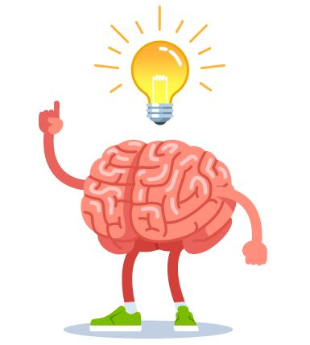
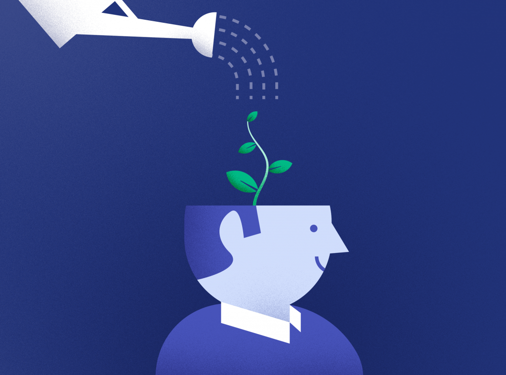

Neuroplasticity. Neuro referring to nerves and nervous system and plasticity referring to the ability to reshape something. Your brain is responsible for receiving the data your body provides trough the 12 cranial nerves which do control everything from your breathing trough the Vagus Nerve to the Abducens Nerve which deals with eye movement. Neuroplasticity is the ability to reshape your brain trough thought, not just reshape the way you think either but reshape it physically which I think is pretty crazy. When you think about doing something or do something a lot the neural pathways strengthen making it easier to do and remember the tasks.
Knowing this is helpful to me because I know that things will not stay so hard to do. For example, I am trying to drink more water but I keep forgetting, but because I know about Neuroplasticity I know that if I keep on doing it for long enough I will be able to do it without thinking about it eventually because my neural pathway will be bigger. This does work for everyone with every habit or pathway you want to strengthen. The way you strengthen a neural pathway is practice practice practice. This does make the pathway used many times and make it bigger and easier to use. You have probably done this before and never realized because I know about it now and know I have.
The thing that attracts me the most about Neuroplasticity is how useful it is. The most fascinating thing about Neuroplasticity for me was a study done to strengthen muscle without working out and just imagine it. This did make them grow 22% muscle strength which I do find amazing because it means we can get better at stuff by just imagining doing it. I think I can use Neuroplasticity in my everyday life to benefit me.
A growth mindset is understanding that you learn and get smarter over time. Acknowledging that just because you do not know it now does not mean you will never know it. The opposite of a growth mindset is a fixed mindset which does accept failer. For example, you do not know how to change a margin with CSS and everything you read makes you more confused and you accept that you just can say "I do not know it". Someone with a growth mindset you say "I don't know it YET". The person with a growth mindset does understand that anything can be learned and just because you do not know it right now does not mean you can not learn it. This is why it is important because it stops people from giving up because they know that if they keep trying they will understand it.
I found out that I shamefully had a fixed mindset about somethings. In year 11 I took Science and it just felt like I could not understand somethings, so instead of trying harder, I did not put any real effort into trying to grasp what I need to know. Because of this, I missed out on an opportunity to learn and grow my mind. Because I know this now I will try harder to understand and when I get stuck I don't give up I will try after a break or come back to it later. The most surprising this for me was how kids understanding the growth mindset did so so much better than kids who had a fixed mindset because it is just a different way of thinking and they both had access to the same resources and opportunities. I find that inspiring and makes me want to change my mindset as much as I can.
In EDA I will rephrase what I say to myself when I get stuck on something, like when I take a break and think about it in my head or talk about it to someone I won't say "I don't get it" like I used to, I will say "I don't get it yet" and this will help change how I see my problems. I will also try to tell people about it, in and out of EDA.